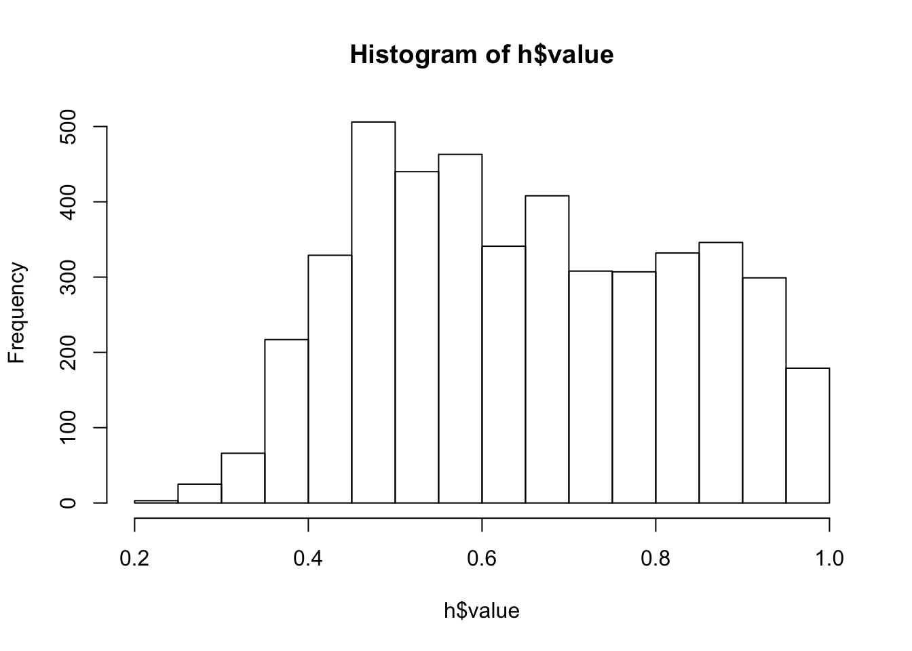

Chapter 2 Organizing and Processing Point Count Data
All data are messy, but some are missing
2.1 Introduction
It is often called data processing, data munging, data wrangling, data cleaning. None of these expressions capture the dread associated with the actual activity. Luckily, this book and course is not about data manipulation, and we can gladly skip these steps. But keep in mind, in real life, you’ll often have to worry about at least four things that can go wrong:
- space (e.g. wrong UTM zones, errors),
- time (ISO format please),
- taxonomy (unknowns, mis-identifications),
- something else (if there were no errors, check again).
This chapter sets you up for the required data skills for the rest of the book/course.
2.2 Prerequisites
library(mefa4) # data manipulation
library(raster) # reading raster files## Loading required package: sp##
## Attaching package: 'raster'## The following objects are masked from 'package:MASS':
##
## area, selectlibrary(sp) # spatial data manipulation
load("_data/josm/josm.rda") # load bird data
rr <- stack("_data/josm/landcover-hfi2016.grd") # rasters2.3 R basics
This short document is intended to help you brush up your R skills. If you feel that these R basics are not very familiar, I suggest to take a look at some introductory R books, sich as this preprint version of Norman Matloff’s The Art of R Programming book: http://heather.cs.ucdavis.edu/~matloff/132/NSPpart.pdf, check out Chapters 1–6.
R is a great calculator:
1 + 2Assign a value and print an object using = or <- (preferred in this book):
(x = 2) # shorthand for print
print(x)
x == 2 # logical operator, not assignment
y <- x + 0.5
y # another way to printLogical operators come handy:
x == y # equal
x != y # not eaqual
x < y # smaller than
x >= y # greater than or equalVectors and sequences are created most often by the functions
c, :, seq, and rep:
x <- c(1, 2, 3)
x
1:3
seq(1, 3, by = 1)
rep(1, 5)
rep(1:2, 5)
rep(1:2, each = 5)When doing operations with vectors remember that values of the shorter object are recycled:
x + 0.5
x * c(10, 11, 12, 13)Indexing and ordering vectors is a a fundamental skill:
x[1]
x[c(1, 1, 1)] # a way of repeatig values
x[1:2]
x[x != 2]
x[x == 2]
x[x > 1 & x < 3]
order(x, decreasing=TRUE)
x[order(x, decreasing=TRUE)]
rev(x) # reverseSee how NA values can influence
sorting character vectors:
z <- c("b", "a", "c", NA)
z[z == "a"]
z[!is.na(z) & z == "a"]
z[is.na(z) | z == "a"]
is.na(z)
which(is.na(z))
sort(z)
sort(z, na.last=TRUE)There are a few special values:
as.numeric(c("1", "a")) # NA: not available (missing or invalid)
0/0 # NaN: not a number
1/0 # Inf
-1/0 # -InfMatrices and arrays are vectors with dimensions, elements are in same mode:
(m <- matrix(1:12, 4, 3))
matrix(1:12, 4, 3, byrow=TRUE)
array(1:12, c(2, 2, 3))Many objects have attributes:
dim(m)
dim(m) <- NULL
m
dim(m) <- c(4, 3)
m
dimnames(m) <- list(letters[1:4], LETTERS[1:3])
m
attributes(m)Matrice and indices:
m[1:2,]
m[1,2]
m[,2]
m[,2,drop=FALSE]
m[2]
m[rownames(m) == "c",]
m[rownames(m) != "c",]
m[rownames(m) %in% c("a", "c", "e"),]
m[!(rownames(m) %in% c("a", "c", "e")),]Lists and indexing:
l <- list(m = m, x = x, z = z)
l
l$ddd <- sqrt(l$x)
l[2:3]
l[["ddd"]]Data frames are often required for statistical modeling. A data frame is a list where length of elements match and elements can be in different mode.
d <- data.frame(x = x, sqrt_x = sqrt(x))
dInspect structure of R objects:
str(x)
str(z)
str(m)
str(l)
str(d)
str(as.data.frame(m))
str(as.list(d))Get summaries of these objects:
summary(x)
summary(z)
summary(m)
summary(l)
summary(d)2.4 JOSM data set
The data is based on the project Cause-Effect Monitoring Migratory Landbirds at Regional Scales:
understand how boreal songbirds are affected by human activity in the oil sands area (2.1 and 2.2, (Mahon et al. 2016)).
JOSM stands for Joint Oil Sands Monitoring.
Look at the source code in the _data/josm directory of the book
if you are interested in data processing details.
We skip that for now.
![JOSM bird data survey locations from [@mahon2016].](images/mahon-2016-fig-1.png)
Figure 2.1: JOSM bird data survey locations from (Mahon et al. 2016).
![Survey area boundary, habitat types and human footprint mapping [@mahon2016].](images/mahon-2016-fig-2.png)
Figure 2.2: Survey area boundary, habitat types and human footprint mapping (Mahon et al. 2016).
Surveys were spatially replicated because:
- we want to make inferences about a population,
- full census is out of reach,
- thus we take a sample of the population
- that is representative and random.
- Ideally, sample size should be as large as possible,
- it reduces variability and
- increases statistical power.
Survey locations were pucked based on various criteria:
- stratification (land cover),
- gradients (disturbance levels),
- random location (control for unmeasured effects),
- take into account historical surveys (avoid, or revisit),
- access, cost (clusters).
The josm obejct is a list with 3 elements:
surveys: data frame with survey specific information,species: lookup table for species,counts: individual counts by survey and species.
names(josm)## [1] "surveys" "species" "counts"Species info: species codes, common and scientific names. The table could also contain taxonomic, trait, etc. information as well.
head(josm$species)At the survey level, we have coordinates, date/time info, variables capturing survey conditions, and land cover info extracted from 1 km\(^2\) resolution rasters.
colnames(josm$surveys)## [1] "SiteID" "SurveyArea" "Longitude" "Latitude"
## [5] "Date" "StationID" "ObserverID" "TimeStart"
## [9] "VisitID" "WindStart" "PrecipStart" "TempStart"
## [13] "CloudStart" "WindEnd" "PrecipEnd" "TempEnd"
## [17] "CloudEnd" "TimeFin" "Noise" "OvernightRain"
## [21] "DateTime" "SunRiseTime" "SunRiseFrac" "TSSR"
## [25] "OrdinalDay" "DAY" "Open" "Water"
## [29] "Agr" "UrbInd" "SoftLin" "Roads"
## [33] "Decid" "OpenWet" "Conif" "ConifWet"The count table contains one row for each unique individual
of a species (SpeciesID links to the species lookup table)
observed during a survey (StationID links to the survey attribute table).
Check the data dictionary in _data/josm folder for a detailed explanation of each column.
str(josm$counts)## 'data.frame': 52372 obs. of 18 variables:
## $ ObservationID: Factor w/ 57024 levels "CL10102-130622-001",..: 1 2 3 4 5 6 8 9 10 11 ...
## $ SiteID : Factor w/ 4569 levels "CL10102","CL10106",..: 1 1 1 1 1 1 1 1 2 2 ...
## $ StationID : Factor w/ 4569 levels "CL10102-1","CL10106-1",..: 1 1 1 1 1 1 1 1 2 2 ...
## $ TimeInterval : int 1 1 1 1 5 5 1 1 1 1 ...
## $ Direction : int 1 2 2 2 1 4 4 4 1 1 ...
## $ Distance : int 1 2 2 1 3 3 2 1 1 1 ...
## $ DetectType1 : Factor w/ 3 levels "C","S","V": 2 2 2 2 1 1 2 2 2 2 ...
## $ DetectType2 : Factor w/ 3 levels "C","S","V": NA NA NA NA NA NA NA NA NA NA ...
## $ DetectType3 : Factor w/ 3 levels "C","S","V": NA NA NA NA NA NA NA NA NA NA ...
## $ Sex : Factor w/ 4 levels "F","M","P","U": 2 2 2 2 4 4 2 2 2 2 ...
## $ Age : Factor w/ 6 levels "A","F","J","JUV",..: 1 1 1 1 1 1 1 1 1 1 ...
## $ Activity1 : Factor w/ 17 levels "BE","CF","CH",..: 5 5 5 5 NA NA NA 5 5 NA ...
## $ Activity2 : Factor w/ 17 levels "48","BE","CF",..: NA NA NA NA NA NA NA NA NA NA ...
## $ Activity3 : Factor w/ 7 levels "CF","DC","DR",..: NA NA NA NA NA NA NA NA NA NA ...
## $ ActivityNote : Factor w/ 959 levels "AGITATED","AGITATED CALLING",..: NA NA NA NA NA NA NA NA NA NA ...
## $ Dur : Factor w/ 3 levels "0-3min","3-5min",..: 1 1 1 1 3 3 1 1 1 1 ...
## $ Dis : Factor w/ 3 levels "0-50m","50-100m",..: 1 2 2 1 3 3 2 1 1 1 ...
## $ SpeciesID : Factor w/ 150 levels "ALFL","AMBI",..: 107 95 95 107 46 43 140 95 125 38 ...2.5 Cross tabulating species counts
Take the following dummy data frame (long format):
(d <- data.frame(
sample=factor(paste0("S", c(1,1,1,2,2)), paste0("S", 1:3)),
species=c("BTNW", "OVEN", "CANG", "AMRO", "CANG"),
abundance=c(1, 1, 2, 1, 1),
behavior=rep(c("heard","seen"), c(4, 1))))
str(d)## 'data.frame': 5 obs. of 4 variables:
## $ sample : Factor w/ 3 levels "S1","S2","S3": 1 1 1 2 2
## $ species : Factor w/ 4 levels "AMRO","BTNW",..: 2 4 3 1 3
## $ abundance: num 1 1 2 1 1
## $ behavior : Factor w/ 2 levels "heard","seen": 1 1 1 1 2We want to add up the abundances for each sample (rows) and species (column):
(y <- Xtab(abundance ~ sample + species, d))## 3 x 4 sparse Matrix of class "dgCMatrix"
## AMRO BTNW CANG OVEN
## S1 . 1 2 1
## S2 1 . 1 .
## S3 . . . .y is a sparse matrix, that is a very compact representation:
object.size(d[,1:3])## 2328 bytesobject.size(y)## 2160 bytesNotice that we have 3 rows, but d$sample did not have an S3 value, but it was a level.
We can drop such unused levels, but it is generally not recommended, and we need to be careful
not to drop samples where no species was detected (this can happen quite often depending on timing of
surveys)
Xtab(abundance ~ sample + species, d, drop.unused.levels = TRUE)## 2 x 4 sparse Matrix of class "dgCMatrix"
## AMRO BTNW CANG OVEN
## S1 . 1 2 1
## S2 1 . 1 .A sparse matrix can be converted to ordinary matrix
as.matrix(y)## AMRO BTNW CANG OVEN
## S1 0 1 2 1
## S2 1 0 1 0
## S3 0 0 0 0The nice thing about this cross tabulation is that we can finter the records without changing the structure (rows, columns) of the table:
Xtab(abundance ~ sample + species, d[d$behavior == "heard",])## 3 x 4 sparse Matrix of class "dgCMatrix"
## AMRO BTNW CANG OVEN
## S1 . 1 2 1
## S2 1 . . .
## S3 . . . .Xtab(abundance ~ sample + species, d[d$behavior == "seen",])## 3 x 4 sparse Matrix of class "dgCMatrix"
## AMRO BTNW CANG OVEN
## S1 . . . .
## S2 . . 1 .
## S3 . . . .Now let’s do this for the real data. We have no abundance column, because
each row stands for exactly one individual. We can add a column with 1’s,
or we can just count the number of rows by using only the right-hand-side of the
formula in Xtab. ytot will be our total count matrix for now.
We also want to filter the records to contain only Songs and Calls, without
Vvisual detections:
table(josm$counts$DetectType1, useNA="always")##
## C S V <NA>
## 9180 41808 1384 0We use SiteID for row names, because only 1 station and visit was done at each site:
ytot <- Xtab(~ SiteID + SpeciesID, josm$counts[josm$counts$DetectType1 != "V",])See how not storing 0’s affect size compared to the long formar and an ordinary wide matrix
## 2-column data frame as reference
tmp <- as.numeric(object.size(
josm$counts[josm$counts$DetectType1 != "V", c("StationID", "SpeciesID")]))
## spare matrix
as.numeric(object.size(ytot)) / tmp## [1] 0.1366## dense matrix
as.numeric(object.size(as.matrix(ytot))) / tmp## [1] 1.106## matrix fill
sum(ytot > 0) / prod(dim(ytot))## [1] 0.04911Check if counts are as expected:
max(ytot) # this is interesting## [1] 200sort(apply(as.matrix(ytot), 2, max)) # it is CANG## BUFF BWTE COGO COHA DCCO GWTE HOLA NHOW NSHO RTHU WWSC CANV NOPI AMBI AMCO
## 0 0 0 0 0 0 0 0 0 0 0 0 0 1 1
## AMGO BAEA BAOR BEKI BOWA CONI CSWA EAPH GBHE GCTH GGOW GHOW HOWR LEOW MERL
## 1 1 1 1 1 1 1 1 1 1 1 1 1 1 1
## NESP NOGO NOHA NSWO PBGR RBGU RTHA SAVS SPSA WBNU BRBL CAGU MYWA SNBU VEER
## 1 1 1 1 1 1 1 1 1 1 1 1 1 1 1
## AMKE AMWI BADO BARS BBWO BHCO BLBW BLPW BLTE BWHA COGR DOWO EAKI HAWO KILL
## 2 2 2 2 2 2 2 2 2 2 2 2 2 2 2
## LEYE NAWA NOPO OSFL OSPR PIWO PUFI RNDU SORA SSHA COSN AMCR AMRO ATTW BHVI
## 2 2 2 2 2 2 2 2 2 2 2 3 3 3 3
## BOCH BRCR BTNW CMWA FOSP FRGU GCKI MAWR MOWA NOFL PHVI SACR SOSA SOSP SPGR
## 3 3 3 3 3 3 3 3 3 3 3 3 3 3 3
## TRES WETA WIWA WIWR YBSA FOTE BAWW BBWA BCCH BLJA CAWA CONW COTE GRYE NOWA
## 3 3 3 3 3 3 4 4 4 4 4 4 4 4 4
## NRWS OCWA REVI RNGR RUBL RWBL WAVI WEWP WISN YBFL YWAR ALFL AMRE CHSP CORA
## 4 4 4 4 4 4 4 4 4 4 4 5 5 5 5
## EVGR HETH LCSP RBGR RBNU RCKI SWSP CCSP COYE DEJU LEFL LISP MAWA OVEN RUGR
## 5 5 5 5 5 5 5 6 6 6 6 6 6 6 6
## SWTH BOGU MALL GRAJ PAWA WTSP YRWA COLO TEWA AMPI WWCR CEDW PISI RECR CANG
## 6 7 7 8 8 8 8 9 12 12 20 23 50 51 200## lyover (FO) flock (FL) beyond 100m distance
head(josm$counts[
josm$counts$SiteID == rownames(ytot)[which(ytot[,"CANG"] == 200)] &
josm$counts$SpeciesID == "CANG",])We can check overall mean counts:
round(sort(colMeans(ytot)), 4)## BUFF BWTE COGO COHA DCCO GWTE HOLA NHOW NSHO RTHU
## 0.0000 0.0000 0.0000 0.0000 0.0000 0.0000 0.0000 0.0000 0.0000 0.0000
## WWSC CANV NOPI GBHE GCTH GHOW LEOW NOHA RBGU BRBL
## 0.0000 0.0000 0.0000 0.0002 0.0002 0.0002 0.0002 0.0002 0.0002 0.0002
## CAGU AMCO BAEA BARS NESP NOGO NOPO NSWO RNDU SNBU
## 0.0002 0.0004 0.0004 0.0004 0.0004 0.0004 0.0004 0.0004 0.0004 0.0004
## VEER BEKI CSWA MERL SAVS SSHA MYWA AMKE BAOR OSPR
## 0.0004 0.0007 0.0007 0.0007 0.0007 0.0007 0.0007 0.0009 0.0009 0.0009
## SPGR WBNU AMGO AMWI BOWA CONI EAPH HOWR NRWS BLTE
## 0.0009 0.0009 0.0011 0.0011 0.0011 0.0011 0.0011 0.0011 0.0011 0.0013
## COGR EAKI GGOW NAWA COSN COTE FRGU MAWR FOTE KILL
## 0.0013 0.0013 0.0013 0.0013 0.0013 0.0015 0.0015 0.0015 0.0015 0.0018
## RTHA BADO BLBW AMBI PBGR SPSA AMPI BHCO BWHA SOSP
## 0.0020 0.0024 0.0024 0.0028 0.0028 0.0028 0.0028 0.0031 0.0037 0.0042
## RUBL MALL PUFI DOWO SORA LEYE ATTW HAWO RNGR BBWO
## 0.0044 0.0046 0.0048 0.0059 0.0068 0.0094 0.0096 0.0101 0.0101 0.0107
## BLJA BOGU AMCR EVGR RWBL OSFL LCSP TRES FOSP WEWP
## 0.0134 0.0140 0.0166 0.0169 0.0169 0.0186 0.0193 0.0201 0.0217 0.0232
## WIWA PIWO RECR SOSA YWAR GCKI BLPW CAWA SACR BTNW
## 0.0236 0.0256 0.0269 0.0269 0.0291 0.0304 0.0306 0.0315 0.0322 0.0335
## NOWA OCWA BRCR CCSP COLO PHVI CONW CEDW RUGR MOWA
## 0.0341 0.0359 0.0381 0.0385 0.0387 0.0394 0.0429 0.0449 0.0475 0.0477
## WAVI BCCH BOCH NOFL SWSP GRYE WWCR AMRO RBNU BBWA
## 0.0582 0.0593 0.0593 0.0622 0.0659 0.0685 0.0751 0.0757 0.0766 0.0810
## CMWA BHVI COYE YBFL YBSA AMRE BAWW LEFL WETA WISN
## 0.0812 0.0814 0.0814 0.0873 0.0878 0.0889 0.0963 0.0974 0.1086 0.1280
## CORA WIWR ALFL MAWA PISI RBGR LISP DEJU GRAJ CANG
## 0.1401 0.1466 0.1582 0.1727 0.1775 0.1832 0.2169 0.2725 0.2898 0.3018
## PAWA REVI RCKI HETH CHSP SWTH WTSP OVEN YRWA TEWA
## 0.3053 0.3344 0.3898 0.4344 0.4460 0.7402 0.8091 0.8831 0.8934 1.22212.6 Joining species data with predictors
Let’s join the species counts with the survey attributes. This is how we can prepare the input data for regression analysis.
spp <- "OVEN" # which species
josm$species[spp,]
compare_sets(rownames(josm$surveys),rownames(ytot))## xlength ylength intersect union xbutnoty ybutnotx
## labels 4569 4569 4569 4569 0 0
## unique 4569 4569 4569 4569 0 0x <- josm$surveys
x$y <- as.numeric(ytot[rownames(x), spp])2.7 Explore predictor variables
Put the locations on the map:
xy <- x[,c("Longitude", "Latitude")]
coordinates(xy) <- ~ Longitude + Latitude
proj4string(xy) <- "+proj=longlat +ellps=GRS80 +datum=NAD83 +no_defs"
xy <- spTransform(xy, proj4string(rr))
col <- colorRampPalette(c("lightgrey", "blue"))(100)
plot(rr[["Water"]], col=col, axes=FALSE, box=FALSE, legend=FALSE)
plot(xy, add=TRUE, pch=19, cex=0.5)Exercise
Explore the data to understand the distributions and associations. Usesummary, table, hist, plot (bivariate, scatterplot matrix), etc.
2.8 Derived variables
Add up some of the compositional variables into meaningful units:
x$FOR <- x$Decid + x$Conif+ x$ConifWet # forest
x$AHF <- x$Agr + x$UrbInd + x$Roads # 'alienating' human footprint
x$WET <- x$OpenWet + x$ConifWet + x$Water # wet + waterClassify surveys locations based on dominant land cover type:
cn <- c("Open", "Water", "Agr", "UrbInd", "SoftLin", "Roads", "Decid",
"OpenWet", "Conif", "ConifWet")
h <- find_max(x[,cn])
hist(h$value)
table(h$index)##
## Open Water Agr UrbInd SoftLin Roads Decid OpenWet
## 12 10 4 14 0 2 2084 160
## Conif ConifWet
## 745 1538x$HAB <- droplevels(h$index) # drop empty levelsReferences
Mahon, C. Lisa, Gillian Holloway, Péter Sólymos, Steve G. Cumming, Erin M. Bayne, Fiona K. A. Schmiegelow, and Samantha J. Song. 2016. “Community Structure and Niche Characteristics of Upland and Lowland Western Boreal Birds at Multiple Spatial Scales.” Forest Ecology and Management 361: 99–116. https://doi.org/10.1016/j.foreco.2015.11.007.